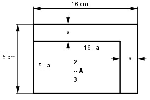

Aufgabe 199 Wie groß ist a, wenn sich die Fläche des Rechtecks um ein Drittel verringern soll?

Es bleiben 2/3 der Rechteckfläche übrig. A = 2/3 * 16 cm * 5 cm = 53,3 cm2 A = (5 – a)(16 – a) 53,3 = 80 – 21a + a2 |-53,3 a2 - 21a + 26,7 = 0 p, q - Formel p = -21 ; q = 26,7 x1,2 = x1,2 = 10,5 ± x1,2 = 10,5 ± a1,2 = 10,5 ± 9,1 a1 = 10,5 + 9,1 = 19,6 cm keine Lösung > 16 cm a2 = 10,5 – 9,1 = 1,4 cm